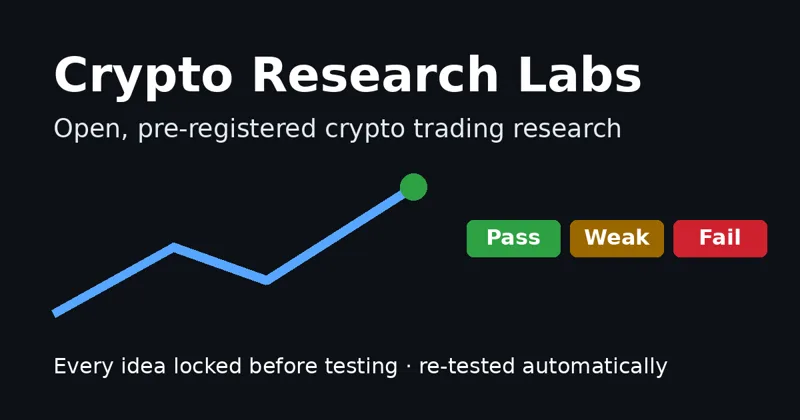

Crypto Research Labs
Cada ideia de trading é escrita e travada antes do teste e depois retestada automaticamente com dados novos. Painel ao vivo, diagnóstico do mercado em palavras simples, resumo semanal e curso para iniciantes em 7 idiomas. Resultados negativos também são publicados.